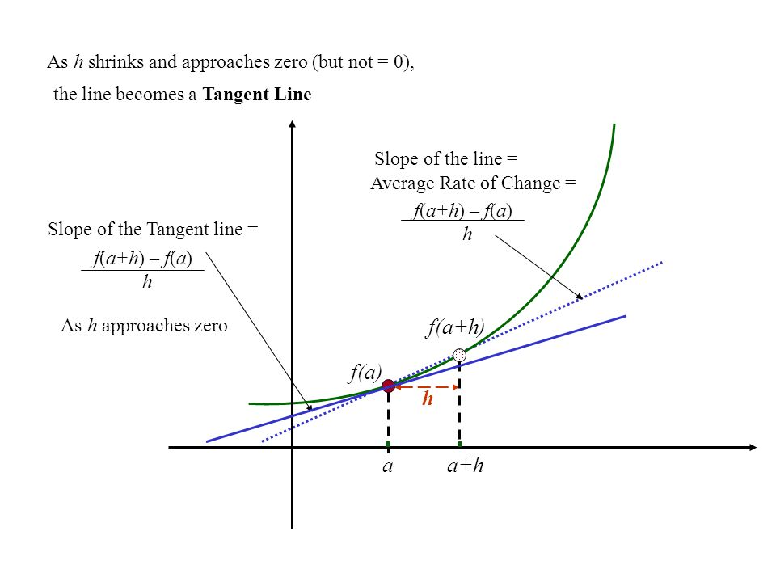

Example 1. Suppose a car is in motion, and its position can be described by the function (t in second and x in meter), then the instantaneous rate of change(in this case, instantaneous velocity) at can be calculated by
That means the instantaneous velocity at is 5m/s.
The instantaneous rate of change of a function at a point is the slope of the tangent line at the point .
